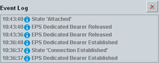

Event Log
The event log area reports events and errors like PS connection state changes, RRC connection establishment/release, SCC state changes and authentication failure.
The button to the right clears the displayed event entries.

Event log area of the main view
Each entry consists of a timestamp, an icon indicating the category of the event and a short text describing the event.
Meaning of the category icons:  = information, warning and error
= information, warning and error